This project demonstrates how I installed and configured Active Directory Domain Services (AD DS) on a Windows Server 2019 virtual machine. The goal of this lab is to create the jzdomain.local domain, configure DNS, and promote the server to a Domain Controller.
In Server Manager, I started the wizard by selecting Add Roles and Features. This begins the process of adding the AD DS role to the server.
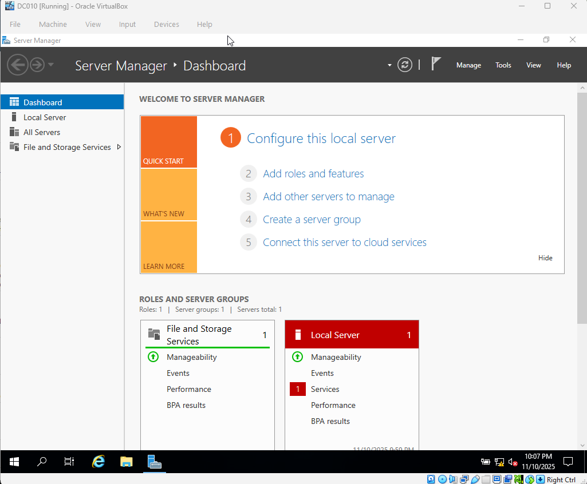
I chose Role-based or feature-based installation. This tells Windows that I'm adding a server role directly to this machine (not a remote or multi-server deployment).
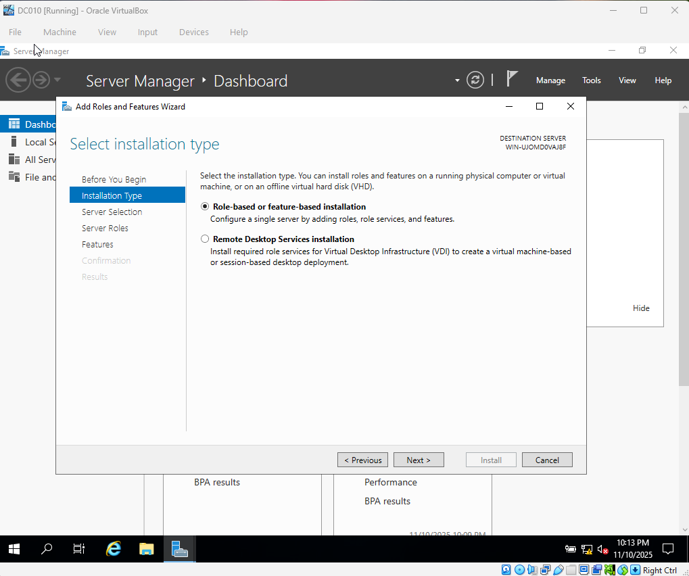
I confirmed that the local server was selected as the target for the new role.
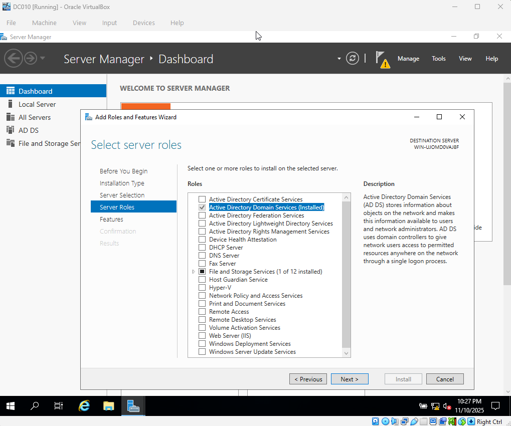
I enabled Active Directory Domain Services. This installs the components needed for user accounts, authentication, Group Policy, and domain management.
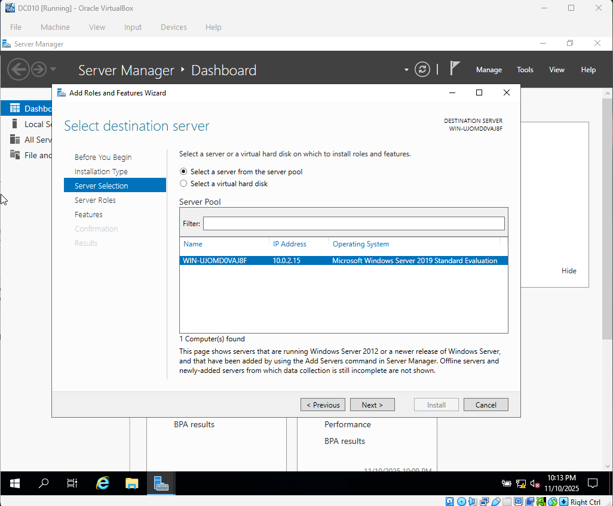
I reviewed the selections and started the installation of the AD DS binaries on the server. Once this completed, the server was ready to be promoted to a Domain Controller.
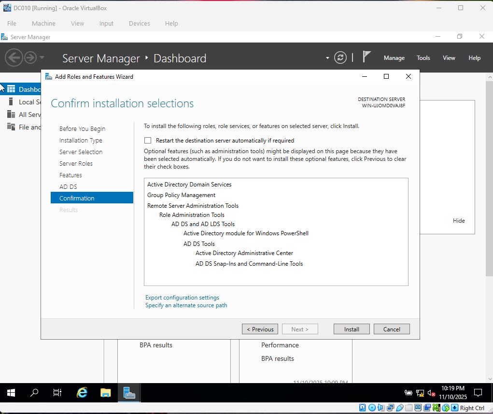
After the role installed, I clicked Promote this server to a domain controller. This step turns the server into the main authority for authentication, domain logons, and Group Policy in the environment.
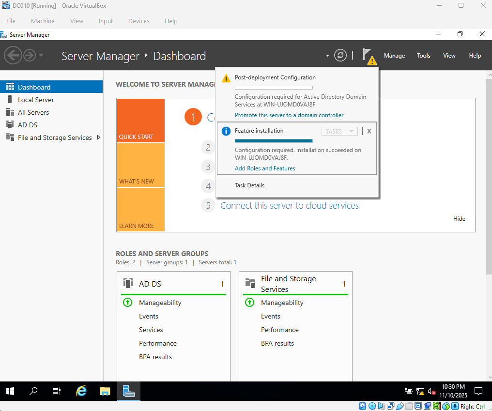
I chose Add a new forest and created a new domain named jzdomain.local. This sets up the base Active Directory structure for the lab.
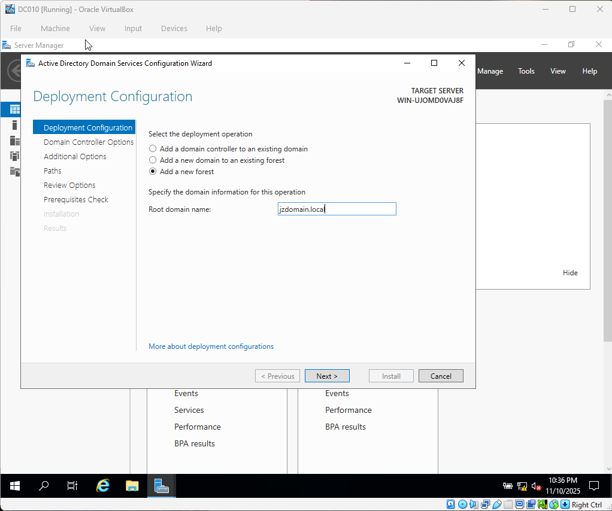
I configured the Domain Controller options, including installing DNS and setting the Directory Services Restore Mode (DSRM) password. DNS is required for AD to function correctly.
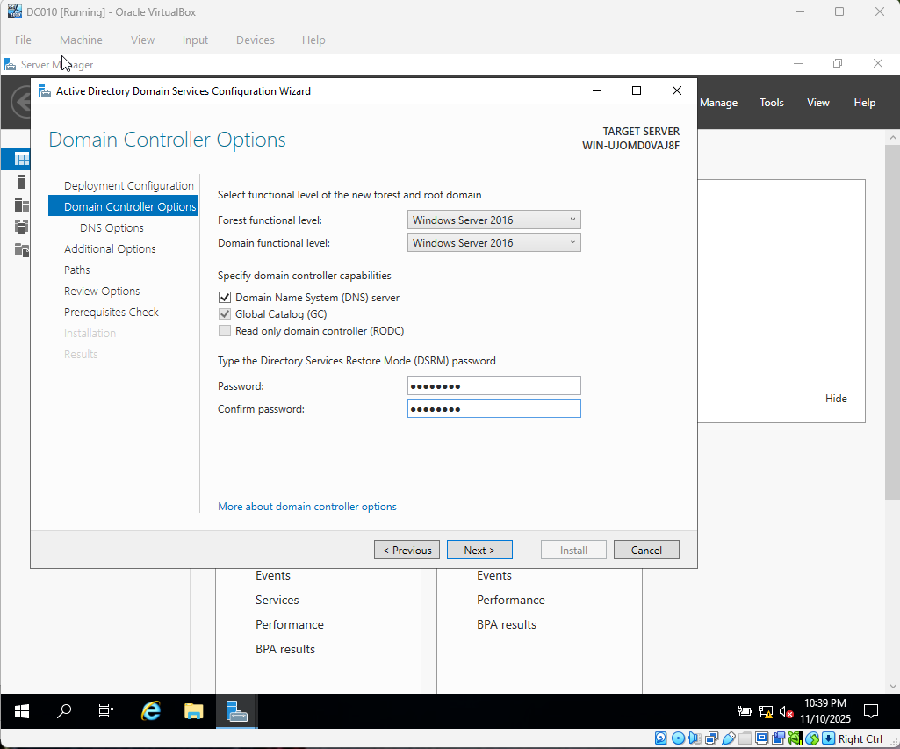
I verified that the NetBIOS name matched the domain prefix. This helps older tools and services that rely on a short domain name continue to work.
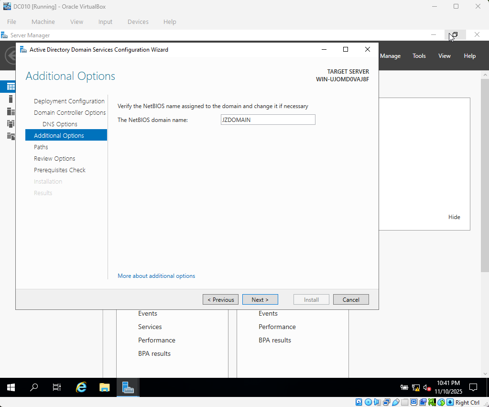
I reviewed all configuration choices before starting the promotion. Once confirmed, the wizard promoted the server to a Domain Controller and rebooted it.
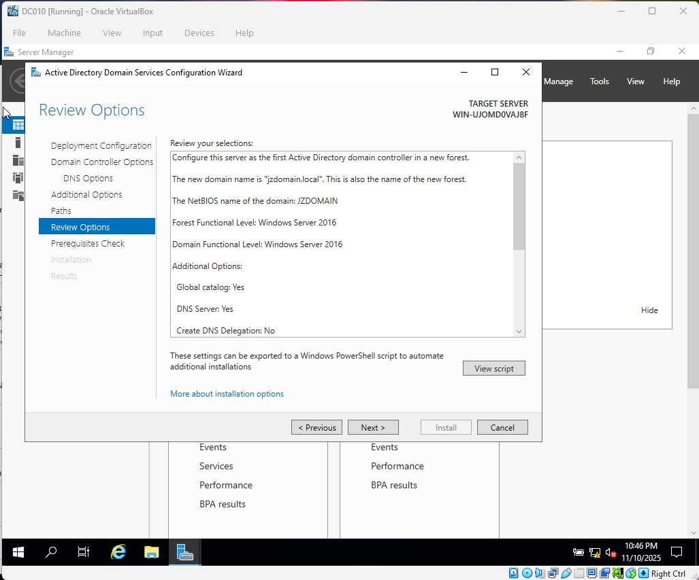
After the server rebooted, I opened Active Directory Users and Computers (ADUC) to confirm that the jzdomain.local domain was created successfully and that the default containers (Builtin, Computers, Domain Controllers, Users, etc.) were present.
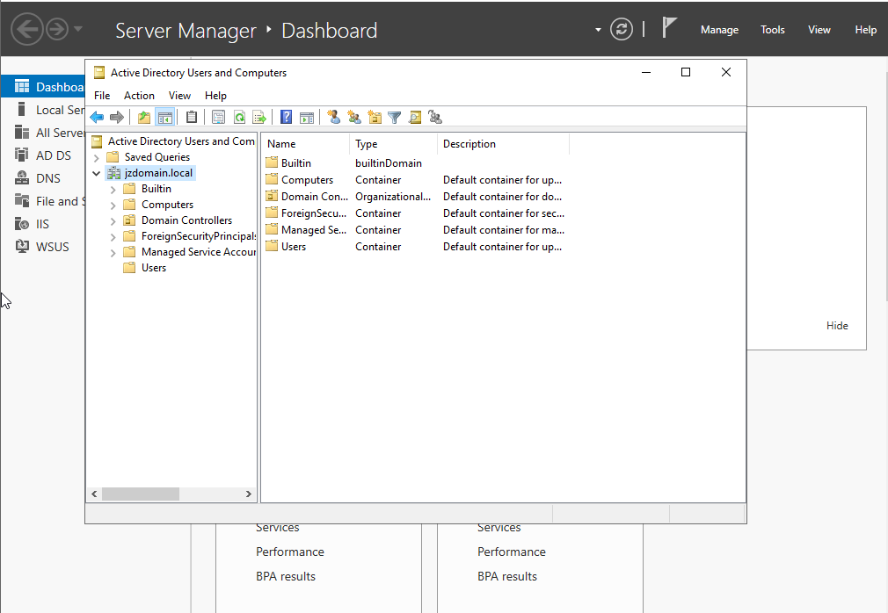